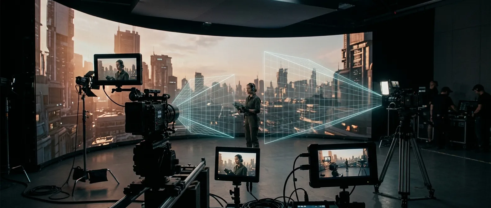

Frame Remapping Every camera sees its own perspective.

The plain version: if you shoot a scene on an LED wall with more than one camera at once, the background can only look right for one of them, unless you fix it. Frame remapping is that fix, and it lets a multi-camera day hold together.
Frame remapping lets multiple genlocked cameras see the LED wall from their own correct perspective. Not the wide shot’s perspective. Not a compromise. Each camera gets the background it needs for its angle.
For multi-camera virtual production, that matters. Without frame remapping, a second camera can see the wrong parallax, making the environment feel off. With it, the background responds properly to each camera position, so the shot holds together across coverage.
It can also support green screen workflows, giving the crew a live on-set visualization of the finished shot while still capturing the clean elements needed for post.
Cineva sets up the system, checks the camera relationships, and confirms the workflow before production is relying on it. When frame remapping is right, it disappears. When it is wrong, everyone sees it. Our job is to make sure it disappears.
Why a second camera breaks the wall.
An LED wall only renders correct perspective for one tracked camera at a time. Point a second camera at the same wall and it sees the first camera's parallax, so the environment skews and the background reads painted on. On a coverage day, that is the difference between a usable take and a reshoot.
Frame remapping, a Brompton capability we run on every multi-camera build, sends each genlocked camera its own correctly rendered view of the same wall. Each angle gets the background it needs, so you can shoot a master and a tight at once without the wall fighting one of them. The content and the feeds are prepped and the camera relationships are checked in prep, not discovered on the floor.
Background and a clean key, one take.
Remapping also lets us interleave solid colour frames between content frames, so one camera captures the in-camera background while another pulls a clean matte off the same wall in the same take. You get the finished look on the day and the clean element post wants, without choosing between a volume and a key. It is the practical bridge between in-camera VFX and a green-screen workflow.
The same per-camera correction carries to any multi-camera driving-plate day. When frame remapping is right it disappears; when it is wrong, everyone sees it. Our job is to prove it in prep so it disappears. Tell us the cameras and the stage, and we will build it.
Common questions
Before you spec the remap.
What is frame remapping?
A Brompton Tessera feature that lets multiple cameras each see a different, correctly rendered perspective on the same LED wall at the same time. Without it, camera tracking only looks right from one position. With it, every camera sees its own point of view.
We're shooting multi-camera. Does each camera get the right background?
Yes. Frame remapping sends each camera its own rendered perspective, even though they're all looking at the same wall. Each one sees the scene from where it's standing.
Can we shoot virtual background and green screen at the same time?
Yes. Frame remapping lets you interleave solid colour frames between your content frames. One camera captures the VP background, another captures a clean green or blue matte off the same wall. You get both in a single shoot.
Does frame remapping work alongside your other processing features?
Yes, it runs in harmony with HFR+, Ultra Low Latency, and ShutterSync on the SX40 and S8. No trade-offs in the rest of your pipeline.